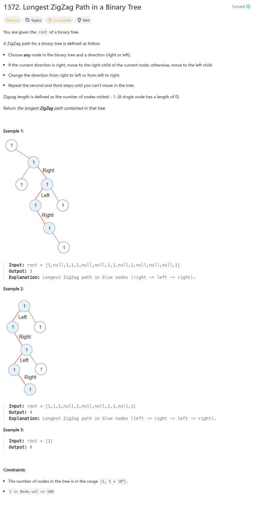

參考資訊：
https://www.cnblogs.com/cnoodle/p/17342376.html
題目：

/**
* Definition for a binary tree node.
* struct TreeNode {
* int val;
* TreeNode *left;
* TreeNode *right;
* TreeNode() : val(0), left(nullptr), right(nullptr) {}
* TreeNode(int x) : val(x), left(nullptr), right(nullptr) {}
* TreeNode(int x, TreeNode *left, TreeNode *right) : val(x), left(left), right(right) {}
* };
*/
class Solution {
public:
int longestZigZag(TreeNode* root) {
return dfs(root, 0, 0);
}
int dfs(TreeNode *n, int cnt, int left) {
int r = 0;
if (!n) {
return cnt;
}
if (left) {
if (n->left) {
r = max(dfs(n->left, cnt + 1, 0), r);
}
if (n->right) {
r = max(dfs(n->right, 1, 1), r);
}
}
else {
if (n->right) {
r = max(dfs(n->right, cnt + 1, 1), r);
}
if (n->left) {
r = max(dfs(n->left, 1, 0), r);
}
}
return max(cnt, r);
}
};